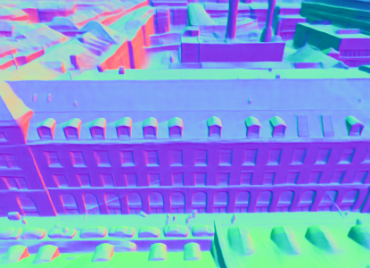

WACV 2027
MatchCityLocAerial Localization in LoD City Models
via Surface Normal Matching

Abstract
Autonomous Unmanned Aerial Vehicle (UAV) navigation in urban environments requires precise pose estimation. Because Global Navigation Satellite System (GNSS) signals are often unreliable in cities, visual localization serves as a crucial complement. Within this domain, textureless Level-of-Detail (LoD) city models provide a lightweight and privacy-preserving substitute for heavy 3D textured meshes. However, localizing against abstract geometry is challenging. Existing pipelines typically score 2D silhouette overlaps, which can suffer from severe geometric ambiguities.
We present MatchCityLoc, a framework that shifts this paradigm to direct feature matching from a noisy 6-DoF pose prior. By extracting surface normals from the query image using a zero-shot foundation model and matching them against rendered LoD normals, we establish explicit 3D-to-2D correspondences. This enables a Perspective-n-Point (PnP) pose solve, which we iteratively refine through a render-and-match loop. Experiments demonstrate strong pose recall and accurate translation and rotation among the evaluated off-the-shelf LoD-based methods with very few renderings. By bridging the modality gap between aerial imagery and texture-free geometry, MatchCityLoc enables accurate localization using lightweight, privacy-preserving city models.
Method
Surface normals provide a common representation for the camera image and the city model. Refinement starts from a noisy position-and-orientation prior with known camera intrinsics.
A shared representation
MoGe-2 predicts surface normals from the UAV image. This prediction is computed once and reused throughout refinement: matching uses surface orientation rather than RGB texture.
- Input
- UAV image
- Output
- Fixed query normal map
Iterative pose refinement
Step through the recorded experiment used in the paper’s refinement figure.

Predicted normals Fixed query
Rendered normals Initial pose
Reprojection onto the image Red: projected LoD edges
Enable JavaScript to view the recorded matches.
Qualitative results
Pose estimates reprojected into real UAV images across all three benchmarks.
Loading comparison…
Representative benchmark example from the main paper. All six methods/reference poses are available.
Original paper panels, including measured errors. LoD-Loc v2 and SemCityLoc use off-the-shelf masks; LoD-Loc v3 uses oracle masks. Red lines are projected LoD edges, not matches.
Quantitative results
Tables follow the paper's order and comparison groups. Click a heading to sort within each group, reverse, then restore paper order.
Bold: best · Underlined: second-best within each paper comparison group. Emphasis follows the paper, including its protocol and coverage exclusions.
Hover, focus, or tap a setup tag or method name for details.
| Dataset | Split / model | Translation ↓ | Rotation ↓ | R @ 2 m / 2° ↑ | R @ 5 m / 5° ↑ |
|---|---|---|---|---|---|
| UAVD4L-LoDv2 | in-Traj · LoD3 | 0.62 m | 0.34° | 92.64% | 98.44% |
| UAVD4L-LoDv2 | out-of-Traj · LoD3 | 0.66 m | 0.28° | 94.66% | 99.22% |
| Swiss-EPFLv2 | in-Place · LoD2 | 1.43 m | 1.02° | 66.5% | 94.2% |
| Swiss-EPFLv2 | out-of-Place · LoD2 | 1.30 m | 0.95° | 69.3% | 96.1% |
| SemCityLockeD | LoD2 | 1.45 m | 1.14° | 59.12% | 77.16% |
| SemCityLockeD | LoD3 | 0.87 m | 0.81° | 70.33% | 86.34% |
Joint recall requires both translation and rotation errors to fall within the stated thresholds. Our SemCityLockeD evaluation uses 937 rectified queries. Published results marked ‡ use their original protocol with mean translation and yaw errors, unlike our median translation and full-rotation errors, and are excluded from the best/second-best highlighting.
Citation
@inproceedings{dhaouadi2027matchcityloc,
title = {{MatchCityLoc}: Aerial Localization in {LoD} City Models via Surface Normal Matching},
author = {Dhaouadi, Oussema and Bauer, Zuria and Meier, Johannes and Pollefeys, Marc and Cremers, Daniel and Wysocki, Olaf},
booktitle = {IEEE/CVF Winter Conference on Applications of Computer Vision (WACV)},
year = {2027}
}